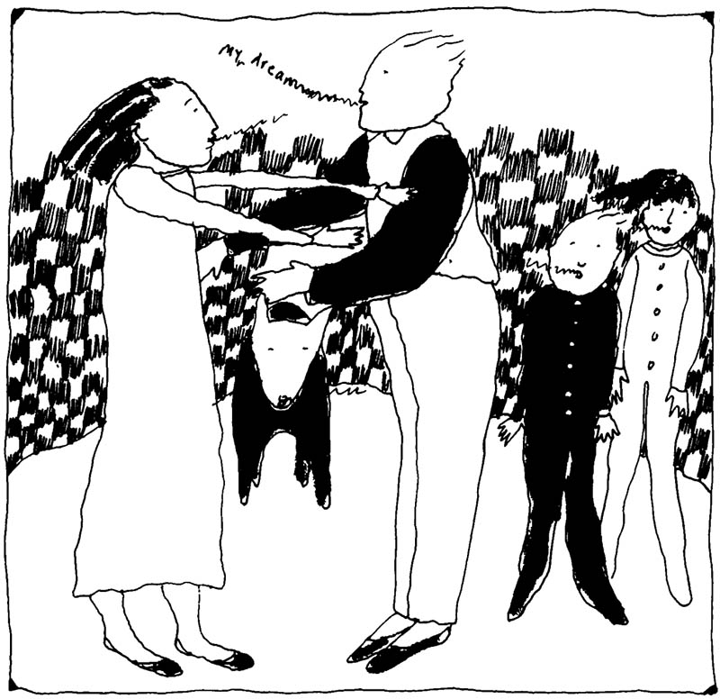

Family-related feelings and family consciousness are some of the most powerful influences on the psychological patterns of individuals. The influence of family patterns is extraordinarily powerful in its depth and intensity. Because of this, we frequently dream about the members of our families. It is quite common and normal to have dreams in which family members are prominently involved. The vast majority of these dreams are the usual dreams in which a parent or sibling is doing something that we generally recognize as their normal behavior. Sometimes, however, they are doing something unusual or even paradoxical in our dreams. Very often, extremely strong feelings and images occur which show us the emotions we feel toward these special people in our lives. The dream, with its strange contours and story-line, is the perfect field on which to portray "raw" emotions, and consequently, the dream can really be a pulse taken on the heartbeat of family life.
Over the last century Freud and others have told us that dreams both hide and reveal what people deep down really feel and think about each other and themselves. In the dream state our hold on reality is not as well guarded as it is when we are wide awake. Our psychological defenses are to a large extent gone and what appears to be "reality" becomes very intense and visual. We have learned from Jung and his followers that there are great spiritual energies, treasures, and messages from the collective unconscious hidden in dreams. This collective unconscious is a vast reservoir of knowledge, wisdom, and experience that has been experienced and collected by humanity through the ages.
We also know that lucid dreaming and ancient healing practices make use of entering the dream in a certain kind of way and using its power to transform reality. Thus it has become quite clear that we can influence the dream much more than we had earlier thought we could. finally we know from many parapsychological studies that ESP or psi occurs a great deal in certain kinds of dreams, especially between dreamers who are both dreaming about the same person. Any number of possibilities can occur when we are dreaming because the "boundaries" between individuals change significantly in the dream state.
For example, after a sleepfilled night in December, my wife and I mentioned our dreams to each other as is our custom. I had dreamed a strange dream in which a "grandmother type" was trying to reach or catch me. She triggered "mixed feelings" in me as to whether she was trying to protect me or somehow "get me." Also in the dream the grandmother attempted to steal or cut off a pickle I had! Having a somewhat Freudian lens, I made note of the sexual aspect of this. I later woke with a slightly eerie feeling about the dream.
On the same night my wife dreamed my grandmother had a necklace with a moon-shaped crescent locket which fell partly from her neck and turned into a knife or sharp edge. My wife then wondered in the dream whether the grandmother was gay.
Notice the correspondences in the grandmother images, the sexual feelings, and the act of cutting. These appeared in both dreamscapes. Neither of us had discussed grandmothers for a long time and we could remember no events recently that would account for the dream in terms of day residue.
While on a post-doctoral fellowship, I had the opportunity to study the dreams of families in therapy. To my surprise, we discovered that recurrent patterns of interaction and behavior are reflected in the dreams of each family member. This was especially true when the family was going through a crisis or some intense situation.
We noted the simple fact that families are often living in the same place, including the same house and rooms for decades and sometimes for generations. They are often in similar sleep and dream cycles at the same time of the night. Certain coordinating tendencies could be seen. It became very clear to us that the major emotional issues in the family were each reflected in slightly different ways in each family member's inner landscape. In a certain sense, each family member's dream life reflected the dream life of each other family member.
In one family, we worked with the following recurring dream of a 15 year old girl. She dreamed that she "escaped" from her parents' house and jumped into their car. As she drove away, the father would run toward her but never manage to quite catch her. The closer he got, the faster the car went. Finally the girl fully escaped him only to run headlong into a telephone pole and kill herself. In this family's therapy sessions, the themes of autonomy and separation with a great deal of anxiety occurred repeatedly. The daughter fought continually with her parents over her own intense involvement with a young man of whom the family did not approve. She felt rebellious and dominated by her parents, in particular her father. However, when she stayed away from home too long, she began to experience somatic problems and wanted to "lose" herself in male companionship.

Another dream by the girl's 12 year old sister revealed a similar theme. The younger girl dreamed that a large "awful" man ran around screaming at her mother, her older sister, and herself. Finally, the man stepped on all three but did not kill them. The dream recurred several times. The family that provided this dream series was composed of a father who had a manic-depressive psychosis, an extremely religious, compulsive mother, and two teenage girls. All three women in the family had psychosomatic problems, such as stomach cramps, persistent gas pains, migraines, and frequent depression.
In working with families in therapy and others, we noted that psi or telepathy often occurs in a variety of situations. We noted that different families naturally had different styles and that certain families communicated, albeit irregularly, with each other through dreams. Some families rarely, if ever, did. In some measure these psi or paranormal dreams can be predic- ted and observed. We found this a very exciting discovery and as we talked with others, we found out more and more people have had the same kind of experiences in their families too.
What we discovered was a field of shared images, ideas, and feelings in each individual within the family. This shared family emotional field, which we call the family unconscious, is a shifting, interconnected field of energy that does not obey the conventional rules of space and time in the waking state. This field of interconnected energy, influence, and information in many ways parallels some of the developments in sub-atomic physics. In a curious way, each emotional dreamscape reflected or implicated each other dreamscape. A certain kind of hologram appeared in which each part could reflect all other parts in slightly different ways.
We know that our "boundaries" and identities intermingle in the dream state with those we dream about. This seems to take a systematic approach when it comes to the dreams of people who are deeply and powerfully interconnected with each other over years and years by shared events, feelings, and patterns of behavior such as in family life. The powerful emotions and the shared histories of families make this possible. There also seems to be a significant rise in psi experiences among such dreamers. As we have outlined in The Family Unconscious, dreams among family members can be used for all kinds of transpersonal work, including family therapy and other kinds of healing. As we continue to collect data about family dreams and explore other areas of the family unconscious, we are growing more and more convinced that a vast reservoir of healing is located in the collected dreams and memories of the people who are most dear to us through so many important years of our lives.